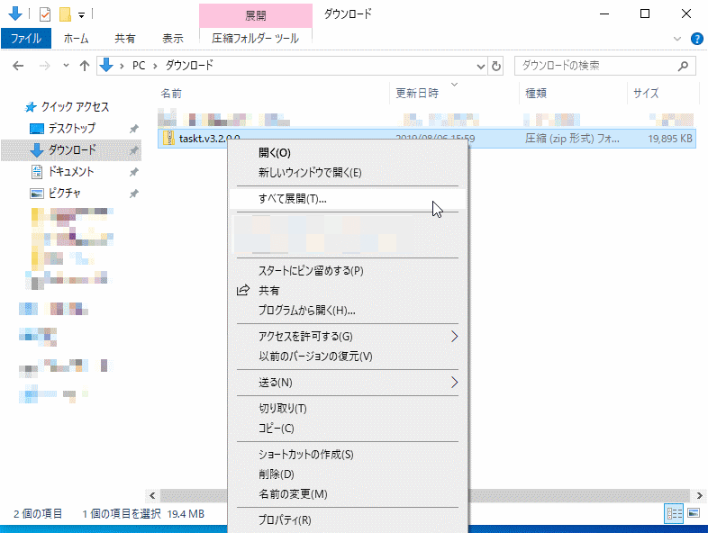
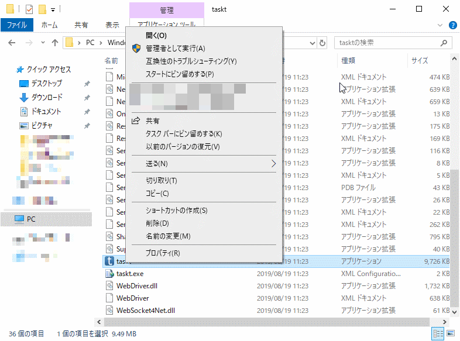

無料で使える RPA の taskt の使い方を紹介しています
taskt は無料で使えるのですが、無料がゆえの欠点かインストールがあまり親切ではありません。むしろ、最大の難関かもしれません。
普通のソフトのように、「次へ」や「はい」のボタンをクリックするのではなく、あれこれやらないといけませんが、順を追って説明します。
まずは、taskt の公式ページ (http://www.taskt.net/) へアクセスします。
こんな感じのページが表示されます。
下にスクロールすると、View Latest Released というリンクがあるので、ここをクリックします。
下のようなページに移動しますので、少しスクロールします。
ちなみに、上から順に新しいバージョンが載っているので、下の画像の例だとバージョン 3.2.0.0 が最新のバージョンです。
ちょっとわかりづらいのですが、Assets と書いてあるところの下に taskt.v3.2.0.0.zip というリンクがあるので、これをクリックするとダウンロードが始まります。
下の画像の例だと、taskt のバージョンが 3.2.0.0 なのでこのようなリンクですが、今後のバージョンアップでリンクの文字が変わる可能性があります。
ファイルのダウンロードが終わると、一般的に ダウンロード というフォルダーにファイルがダウンロードされています。
下の画像の場合は、taskt のバージョン 3.2.0.0 をダウンロードしたときの状態です。
ダウンロードした taskt のファイルを右クリックし、すべて展開 をクリックします。

次に、下のような画面が表示されるので、展開 をクリックします。
少し待つと、下のような画面が表示されます。Release というフォルダーに taskt のプログラムが入っています。
しかし、Release という名前だと分かりづらいので、Release を右クリックし、名前の変更 をクリックします。そして、「taskt」に変更します。
次に、名前を変更した taskt フォルダーを Program Files へ移動します。
PC (Windows 7 の場合は コンピューター) をダブルクリックし、C ドライブをダブルクリックすると、Program Files というフォルダーがあります。
移動しようとしたとき、下の画面のようなメッセージが表示されたら 続行 をクリックしてください。
Program Files に taskt フォルダーを移動させただけだと、スタートメニューなどに登録されませんので、何とかしていきます。
Program Files にある taskt フォルダーをダブルクリックします。
下にスクロールすると、taskt というファイル (青い「t」のアイコン) があるので、右クリックします。

Windows 10 ならば、スタートにピン留めする や タスクバーにピン留めする をクリックすれば良いです。
Windows 8 や Windows 7 ならば、ショートカットの作成 をクリックすると、taskt - ショートカット というファイルが作られるので、それをデスクトップへ移動してください。
taskt は初めて実行するときだけ、いくつか特殊なメッセージが表示されます。
Windows 10 ならば、スタートメニューにピン留めした taskt のアイコンをクリックします。Windows 7 ならば taskt のショートカットをダブルクリックします。
もし、下のような画面が表示されたら 実行 をクリックしてください。
taskt のロゴのような画面が数秒表示されます。
次に下のような画面が表示されます。これは、taskt で作成したスクリプトファイル (RPA の操作を保存したファイル) を保存するためのフォルダーを作っても良いか、というようなメッセージなので Yes をクリックします。
モザイクがかかっている部分は、あなたのユーザー名が表示されます。
taskt の画面が表示されます。
このとき、ドキュメント を見ると、taskt というフォルダーが作られています。taskt フォルダーの中には、My Scripts というフォルダーがあり、My Scripts フォルダーに作成したスクリプトが保存されますので、覚えておきましょう。
taskt とは？でも少し書きましたが、パソコンに .NET Framework 4.8 がインストールされていないと、taskt は実行できません。
下のようなメッセージが表示されてしまいます。
このとき、はい をクリックすると、自動的にブラウザーが起動し、.NET Framework 4.8 がダウンロードできるページが表示されます。
.NET Framework 4.8 のインストール方法は、iPentec さんのここのページ (https://www.ipentec.com/document/windows-install-dotnet-framework-48-runtime) が非常に詳しいので、そちらを参考にしてください。